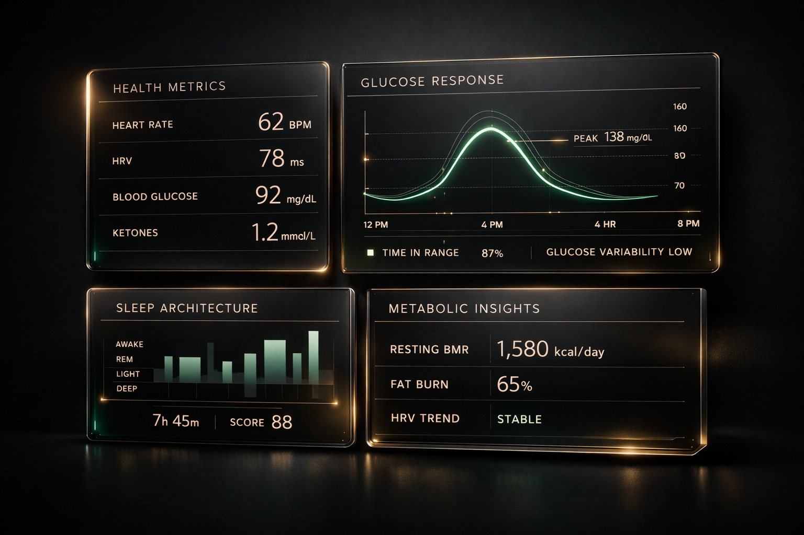

Design the next decade of your health
A 12-session live online academy that teaches you to read metabolic signals, interpret longevity research, and build a personal healthspan blueprint — grounded in science, not trends.
Why Now
The science of living longer changed. Most people haven't noticed yet.
In the last five years, longevity science has shifted from speculation to measurement. We now have peer-reviewed data showing that specific interventions — from rapamycin combinations to CGM-guided metabolic management — can meaningfully extend human healthspan.
But this information isn't reaching the people who need it most. It is scattered across journals, buried in podcasts, distorted by influencer marketing, and tangled in contradictory advice. What's missing is not more content — it is a structured way to learn, interpret, and act on what the research actually says.
That gap is why this academy exists.
83%
of adults over 40 say they want to improve their healthspan but don't know where to start
$7.1T
global wellness market — yet most people still lack a coherent health framework
12
validated life-extending compounds identified by the NIA — up from just 1 a decade ago
–37%
premature death risk reduction achievable through interventions already covered in our curriculum
Transformation
What you leave with is not inspiration. It is a framework.
By the end of the academy, participants leave with a clearer view of their own patterns, a stronger decision-making lens, and a practical longevity blueprint.
-
Read metabolic signals more intelligently
Understand glucose responses, energy patterns, and what your body is actually telling you.
-
Adjust meals and routines with confidence
Move beyond contradictory nutrition advice with a personal decision-making framework.
-
Understand movement and sleep as regulation
Learn how exercise and rest function as metabolic and neural system regulators.
-
Think critically about supplements and wearables
Evaluate what's worth your attention and what's marketing noise.
-
Build a personal 90-day longevity plan
Leave with a structured, actionable blueprint designed around your life and goals.
The Research
Humans will routinely live past 120. The data is already here.
The interventions that once sounded like science fiction are now producing measurable, peer-reviewed results. These are the exact datasets our faculty teach you to interpret.
Lifespan Extension
+36.6%
Maximum median lifespan increase achieved via rapamycin + acarbose combination therapy in mammals
NIA Interventions Testing Program, J. of Gerontology 2025
Heart Disease Risk
–30%
Reduction in heart attacks, strokes, and cardiovascular death through Mediterranean dietary patterns
PREDIMED Trial, NEJM 2013 / Estruch et al.
All-Cause Mortality
–6.4%
Projected reduction in all-cause mortality from GLP-1 therapies by 2045 across U.S. population
Swiss Re / Nature Biotechnology, 2025
Mortality Risk from Poor Sleep
+34%
Increase in all-cause mortality risk from sleeping more than 9 hours or less than 7 hours nightly
GeroScience Meta-Analysis, 2025 (HR 1.34)
7 interventions now proven to extend human lifespan
Bubble size = breadth of health systems affected. Hover to explore each intervention.
Data compiled from NIA ITP 2025, PREDIMED, GeroScience, Nature Biotechnology, Cell Reports Medicine
Up to 37% lower mortality. These are the levers.
Measurable risk reduction from interventions covered in our curriculum
NEJM, GeroScience, JAMA Network Open, ADA CGM Coverage Report 2025
From 1 compound to 12 validated life-extenders in 20 years
The NIA's gold-standard testing program is accelerating faster than any decade prior
NIA Interventions Testing Program Review, Journal of Gerontology 2025 — 54 compounds tested across 3 independent sites
Curriculum
A 12-session live curriculum from understanding to implementation.
Each session builds on the last — from healthspan design and metabolic awareness to CGM interpretation, sleep, stress, and long-term integration.
Arc One · Sessions 1–3
Reframe Aging
Healthspan Design — Redefine what it means to age well on your own terms.
Metabolic Health Foundations — Understand the systems that drive energy, weight, and resilience.
Nutrition as Signal — Learn how food choices create measurable metabolic responses.
Arc Two · Sessions 4–6
Build Metabolic Literacy
CGM Literacy — Learn to read continuous glucose data with clinical intelligence.
Food Order & Glucose Responses — Master the science of meal sequencing and glycemic impact.
Movement as Medicine — Understand how exercise regulates metabolic and neural systems.
Arc Three · Sessions 7–9
Interpret Signals & Behavior
Sleep Architecture — Decode how sleep quality drives every other health metric.
Stress Regulation — Build systems for nervous system resilience and recovery.
Supplements, Tests & Tech — Critically evaluate the tools and technologies of longevity.
Arc Four · Sessions 10–12
Create a Personal Blueprint
Wearables & Biomarker Interpretation — Turn raw health data into actionable insight.
Personal Longevity Blueprint — Synthesize everything into a personalized action framework.
Integration & 90-Day Plan — Build a concrete plan for durable behavior change.
The Experience
Live learning changes what people actually do.
Built around real-time teaching, discussion, interpretation, and guided experimentation — because behavior change rarely happens in isolation.
90-Minute Live Sessions
Not lectures alone. Each session integrates visual instruction, live Q&A, and guided reflection designed to build understanding that sticks.
Breakout Discussions
Small-group analysis of real scenarios and personal data patterns. Shared language creates stronger insight than solo study.
Between-Session Practice
Guided experiments, reflection exercises, and observation assignments that connect classroom concepts to daily life.
Peer Refinement
Structured peer feedback on longevity blueprints and health strategies. Diverse perspectives sharpen your plan.
Case Analysis
Walk through real metabolic data, CGM patterns, and behavioral case studies. Learn pattern recognition from real-world examples.
Accountability Structure
Cohort rhythm creates natural follow-through. Weekly touchpoints ensure concepts translate into sustained practice.
Faculty
Taught by educators who translate complexity into practice.
The faculty model prioritizes clarity, rigor, and real-world guidance — not trend-chasing.
Faculty Instructor
Metabolic Health & Longevity
Specializing in metabolic regulation, glucose dynamics, and the science of healthspan extension. Translates clinical research into clear, actionable understanding.
Faculty Instructor
Behavioral Science & Coaching
Expert in behavior change methodology, habit design, and translating insight into sustainable daily practice. Bridges the gap between knowledge and action.
Faculty Instructor
Sleep & Stress Physiology
Focused on sleep architecture, circadian health, nervous system regulation, and resilience optimization. Teaches the science of recovery and cognitive function.
Learning Environment
A connected platform that supports the work between sessions.
Participants need more than video links. They need structure, materials, continuity, and a sense of momentum.
The academy experience is supported by a digital environment that organizes course materials, session access, guided exercises, and ongoing participation across the cohort. Designed to reduce friction and keep attention on learning.

The Science
The systems that shape how you age are already running.
Sleep architecture, stress regulation, metabolic signaling, neural resilience — these are not abstract concepts. They are processes happening in your body right now. The question is whether you are observing them, understanding them, and shaping them deliberately.
Fit
For adults who want substance over noise.
This academy is designed for people who are ready to think clearly, engage consistently, and build durable health practices over time.
This is for you if
- You care about healthspan, metabolic health, energy, and aging well
- You want a coherent, evidence-informed framework — not contradictory advice
- You are willing to engage consistently over 12 weeks
- You value live teaching, expert guidance, and peer accountability
- You want to understand the systems behind your body's signals
- You are ready to build and refine a personal longevity blueprint
This is not for you if
- You are looking for miracle protocols or overnight transformation
- You prefer passive content consumption over structured engagement
- You want a shortcut around the work of reflection and behavior change
- You are seeking medical diagnosis or clinical treatment
- You want someone to tell you exactly what to eat and do without understanding why
Proof
What this should feel like to participants.
The strongest proof will come from clarity, confidence, and durable behavior change.
"I finally understand what my body has been trying to tell me. The metabolic literacy sessions alone were worth the entire program."
"This replaced years of conflicting health advice with a single coherent framework. I now know how to think about food, sleep, and stress — not just what to do."
"The cohort structure made all the difference. Having people to discuss findings with and hold me accountable changed what I actually did after each session."
FAQ
Questions serious learners usually ask
Clear answers on format, expectations, and fit.
This is lifestyle and health education, not medical training. The curriculum teaches participants to understand longevity science, metabolic health concepts, and evidence-informed practices. It does not provide medical diagnoses, prescriptions, or clinical treatment. Participants are encouraged to work with their own healthcare providers alongside the program.
Both. The curriculum is designed to meet learners where they are. Those new to longevity science will find a clear, structured entry point. Those with existing knowledge will find the depth, peer discussion, and guided integration uniquely valuable. The cohort model means participants learn from each other's perspectives and experience levels.
A CGM is recommended for the metabolic literacy sessions but is not strictly required. The curriculum teaches you how to interpret CGM data regardless. If you choose to use one, the program will help you understand what the data means and how to respond to it. Guidance on device options will be provided.
Expect approximately 3–4 hours per week: a 90-minute live session plus 1.5–2 hours for between-session reading, practice exercises, and reflection. The workload is designed to be sustainable for working professionals.
No. This is for anyone interested in understanding and improving their long-term health trajectory. Most participants are healthy adults who want to be more intentional about aging well — not people managing an existing condition. That said, improved metabolic awareness benefits everyone.
Yes. The final sessions are dedicated to building a personal longevity blueprint — a structured, actionable plan based on your own patterns, goals, and lifestyle. This is not a generic template. It is a framework you build through guided exercises, peer feedback, and instructor guidance throughout the program.
Live. All sessions are delivered in real time with live instruction, Q&A, and group discussion. Session recordings are provided for review, but the value of the program depends on live participation and cohort engagement. This is not a self-paced course.
The faculty combines credibility in longevity science, metabolic health, lifestyle medicine, behavioral science, and health coaching. Instructors are selected for their ability to translate complex research into clear, actionable guidance — not for celebrity status or trend promotion.

Next Cohort
Apply to the next live cohort.
For adults who want a more intelligent way to approach aging, health, and the years ahead. eTeacher Longevity is designed for people ready to replace fragmented wellness advice with a structured, live, evidence-informed learning experience.